CoMNIST 학습
CoMNIST 데이터를 CNN으로 학습할 수 있다.
Part 3 · CoMNIST & GPU
숫자 10개에서 알파벳 26개로 문제를 확장하고, 더 큰 이미지를 빠르게 학습하기 위해 원격 A100 GPU 서버에 접속합니다.
Learning Goals · S92
CoMNIST 데이터를 CNN으로 학습할 수 있다.
여러 하이퍼 파라미터를 변경하면서 모델의 성능을 높일 수 있다.
Dataset · S93–94
CoMNIST는 키릴 문자와 라틴 문자를 위한 MNIST 데이터셋입니다. 이번 수업에서는 모두 대문자인 알파벳 26글자 이미지를 분석합니다.
MNIST보다 분류할 글자와 이미지 크기가 모두 커집니다.
28×28 MNIST보다 픽셀 수가 훨씬 많습니다.
A부터 Z까지의 대문자를 분류합니다.
CPU만으로 처리하면 학습이 느려집니다.
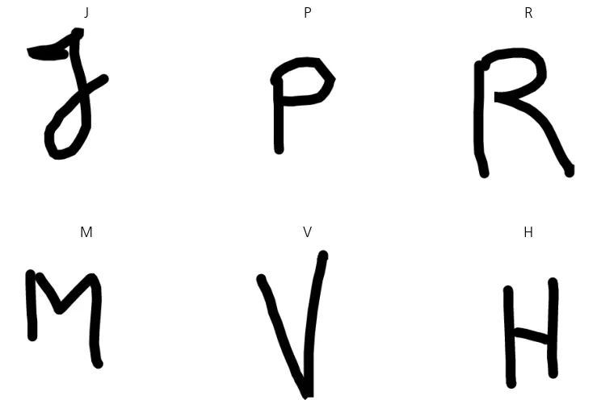
CPU vs GPU · S95
한 개의 총구가 매우 빠르게 색깔과 위치를 바꿔가며 발사하는 장치에 가깝습니다.
여러 개의 총구가 고정된 자리에서 한꺼번에 발사하는 장치에 가깝습니다.
Hardware · S96–98
대규모 병렬 연산 장치는 매우 비쌉니다. 원본 자료의 가격 화면은 GPU와 CPU의 비용 차이를 직관적으로 보여 줍니다.
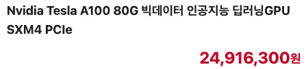
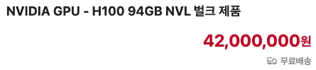
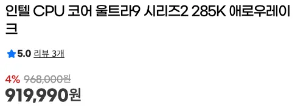
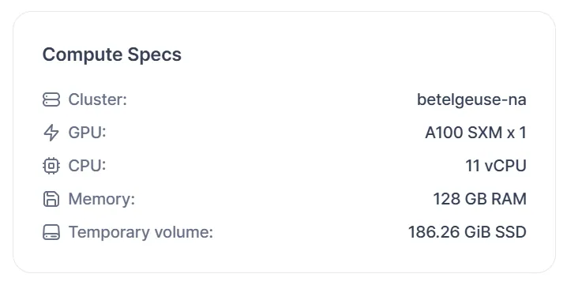
가격은 원본 수업 자료에 캡처된 당시 화면이며 현재 판매 가격을 뜻하지 않습니다.
Remote Lab · S97–98
각자 배정된 계정으로 학교의 원격 GPU 환경에 접속합니다. 계정, 호스트, 포트, 개인 키는 학생마다 다르므로 자신의 배정값만 사용합니다.
원본 S98의 학생 이름·계정·포트 표는 개인정보와 접속 정보가 포함되어 있어 페이지에 전시하지 않습니다. 수업 중에는 별도로 안전하게 배부한 개인 정보를 사용합니다.
Remote-SSH · Step 01 · S99
VS Code를 실행하고 확장 탭에서 Remote-SSH를 검색해 Microsoft 확장을 설치합니다.
검색 결과의 제작자가 Microsoft인지 확인합니다.
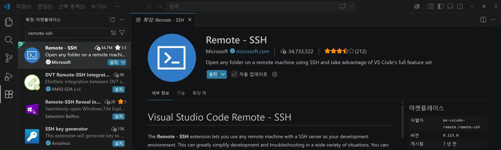
Remote-SSH · Step 02 · S100
Ctrl + Shift + P를 누르고 Remote-SSH: Open SSH Configuration File을 선택한 뒤 사용자 폴더의 .ssh/config를 엽니다.
시스템 전체 파일이 아니라 자신의 사용자 폴더 아래 구성 파일을 선택합니다.
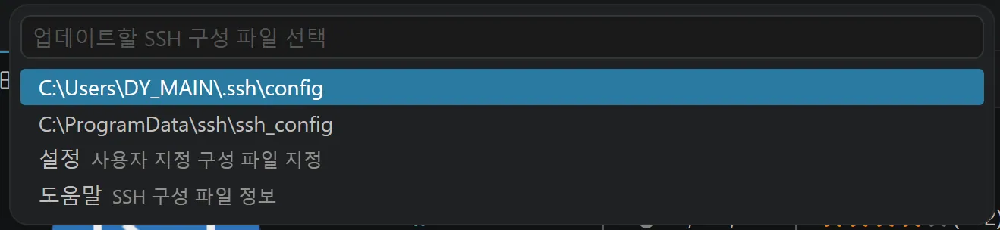
Remote-SSH · Step 03 · S101
Host, HostName, IdentityFile, Port, User를 자신의 배정 정보에 맞춰 입력하고 저장합니다.
스크린샷의 호스트명·키 파일 경로·포트는 예시입니다. 자신의 PEM 키 위치와 개인별 포트를 입력합니다.

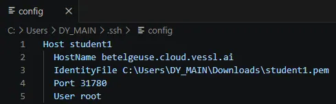
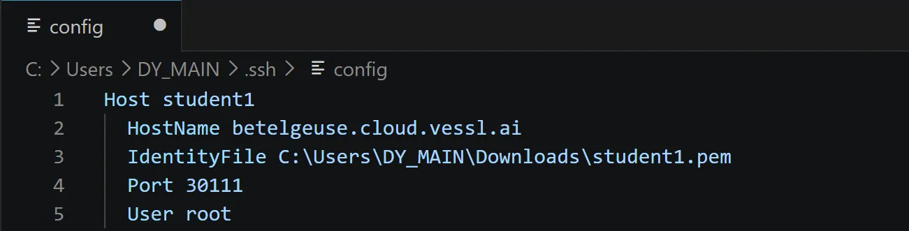
Remote-SSH · Step 04 · S102
명령 팔레트에서 Remote-SSH: Connect to Host...를 선택하고 저장한 호스트를 누릅니다. 새 창이 열리면 원격 호스트 플랫폼으로 Linux를 선택합니다.
연결 과정에서 호스트 선택과 운영체제 선택을 차례로 진행합니다.
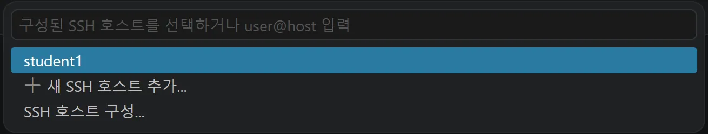
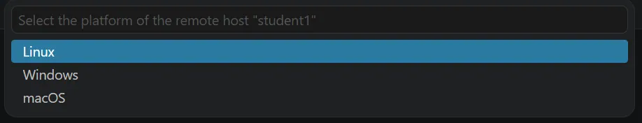
Remote-SSH · Step 05 · S103
/root/ 폴더 열기연결된 VS Code 창에서 폴더 열기를 누르고 /root/를 선택합니다. 신뢰 여부가 표시되면 배정받은 서버가 맞는지 확인한 뒤 계속합니다.
알 수 없는 서버나 폴더라면 진행하지 말고 교사에게 확인합니다.
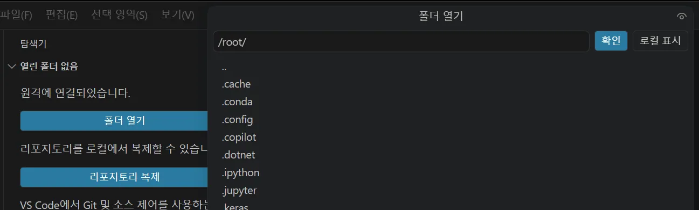
/root/ 폴더 선택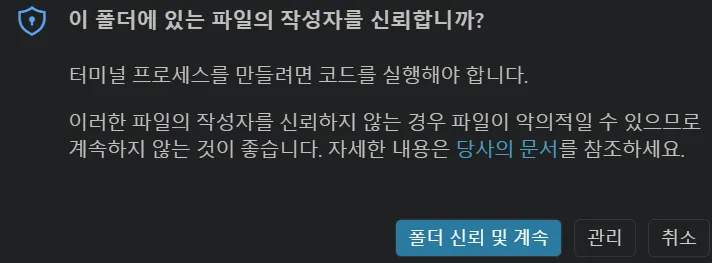
Remote-SSH · Step 06 · S104
nvidia-smi로 A100 확인하단 터미널에서 nvidia-smi를 입력하고 Enter를 누릅니다. GPU 이름, 메모리, 사용률이 표시되면 원격 GPU 환경에 정상적으로 접속한 것입니다.
원본 화면에서는 메모리 81,920MiB와 GPU 사용률 0%가 표시됩니다.
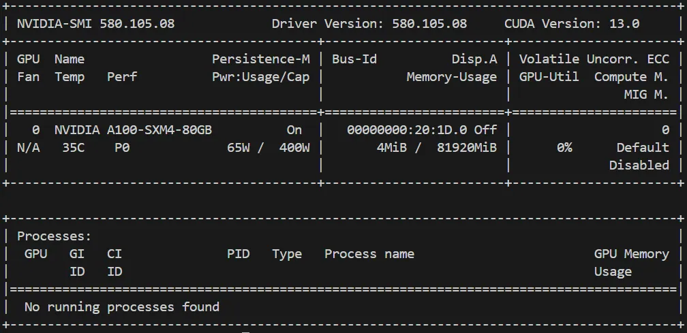
Quick Check
답을 고르면 바로 해설이 나타납니다.
답을 고르면 바로 해설이 나타납니다.